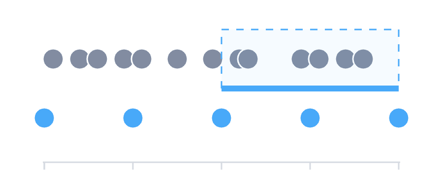
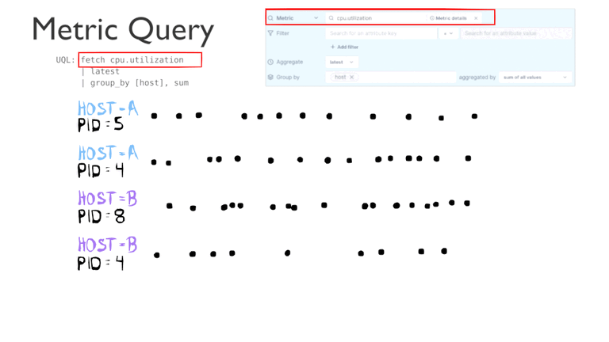
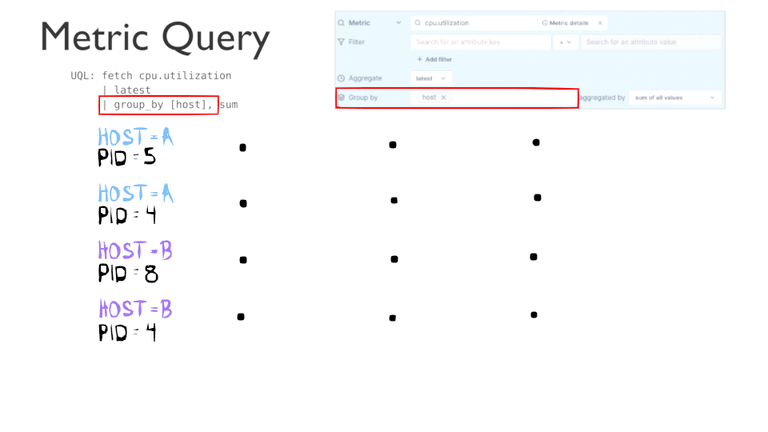
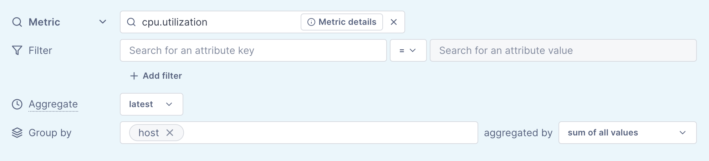
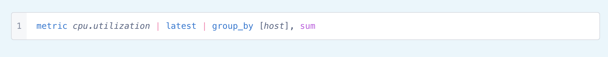

lambcode.net blog
How queries at Lightstep work
At Lightstep, we treat metric queries and span queries almost exactly the same. In this post, we’ll explore how the different stages of a query interact with each other to take your raw data from our data storage layer and aggregate it into useful visualizations.
Data Ingest
Before we dive into how data points are queried, we first need to understand how data is stored in Lightstep. We continuously collect customer data points that have a wide variety of attributes, such as customer_id, or hostname. For both metric and span data points, we partition the points based on these attributes, as well as the name of the span or metric itself. Points with the same exact set of attributes are stored together in chronological order based on the timestamp. This is also known as a timeseries.

Query Pipeline
Every query at Lightstep can be broken down into multiple stages. The most common stages found in almost every query are:
- Fetch
- Filter
- Align
- Group by
These stages are applied to the data in the order defined by the user, which is usually the same order as they are listed above. Each of these stages uses the output of the previous stage and produces a collection of timeseries. Let’s look at each of these stages in more detail.
Query Pipeline: Fetch and Filter
Now that we have data stored as timeseries, we can query that data. The fist stage of every query pipeline is called the fetch operation. Fetch uses a predicate to determine what subset of timeseries need to be loaded from the data storage layer. In Lightstep’s Unified Query Language – a text-based query language for metrics and spans also known as UQL – this is spelled `metric <metric_name>` for metrics and `spans count` or `spans latency` for span queries along with an (optional for metrics) `filter` operation. In our visual query builder, the fetch and filter options correspond with the first section.
TIP: For those readers who are familiar with the SQL language, the fetch and filter stages are quite similar to SQL’s FROM and WHERE
The fetch operation will grab all the timeseries that match the predicate. These points may not be temporally aligned, so the next stage in every pipeline aligns the data.
Query Pipeline: Align
Raw timeseries data for queries can often contain thousands of individual data points. If we attempted to plot this raw data on a chart, we’d quickly run into a fundamental issue: there aren’t enough pixels to render each value! To avoid this issue, we pick a few hundred timestamps that we want data for and align the raw data to match. We’ll also combine points across multiple timeseries in the “group by” stage. To do that, the points must first the same timestamp. And so, the align stage is required for all telemetry queries at Lightstep.
For each output timestamp that has been chosen, we aggregate all the points from the original timeseries that have a timestamp between the output timestamp and [output timestamp - input window]. The default “input window” is just the distance between each output point, which results in each output point aggregating a unique set of input points. By specifying an input window that is larger than the distance between output points, the resultant data can be smoothed; the larger the input window the more smoothing occurs.
This type of aggregation is called temporal aggregation because we combine points across the time dimension. Note that the points being combined during a temporal aggregation all come from the same timeseries and all have different timestamps. The following aggregators are available to use for temporal aggregation:
TIP: Think of temporal aggregation as horizontal aggregation.
Alignment aggregator |
UQL spelling |
Description |
Latest |
latest |
Output the last point in the found in the window |
Delta |
delta |
Output the change in the metric from the earliest point to the latest point. |
Rate |
rate |
Output the rate that the metric is changing at (per second) |
Sum |
reduce sum |
Output the mathematical sum of all points |
Max |
reduce max |
Output the maximum point |
Min |
reduce min |
Output the minimum point |
Mean |
reduce mean |
Output the average of all points |
Continuing the visual from above here we show the fetch and align.
Query Pipeline: Group
Now that we have aligned the timeseries data, we can combine it in a pipeline stage called “group by.” When grouping, we only consider attributes with the keys defined by the user and ignore all others. The “group by” stage combines all timeseries where the considered attributes’ key/values are equal using a specified aggregator
For example, if we group by “host” and half of our fetched timeseries have a host value of “A” and the other half have value “B,” we end up with two timeseries where these two sets of values are aggregated.
This type of aggregation is called spatial aggregation because we combine points across the space of all the timeseries in each group. Note that the points being combined during a spatial aggregation all have the same exact timestamp and all come from a different timeseries. This is why the “align” stage is so crucial; it ensures that the points during spatial aggregation all have the same timestamp. The following aggregators are available to use for spatial aggregation:
TIP: Think of spatial aggregation as vertical aggregation.
Group by Aggregator |
UQL spelling |
Description |
Sum |
group_by [...], sum |
For scalar values, all points are added together. For distribution values the distributions are combined. This is the only supported aggregator for distribution metrics and span latency queries. |
Mean |
group_by [...], mean |
The mathematical mean of all points |
Max |
group_by [...], max |
The maximum value of combined points |
Min |
group_by [...], min |
The minimum value of combined points |
Count |
group_by [...], count |
Ignores the values of points and just returns the number of points combined. |
Let’s look at the “group by" stage in action. While this only shows two underlying timeseries in each group, in practice we can combine hundreds of timeseries in each group.
Tying it all together
Now that we've seen how each stage of the query pipeline works, let's put it together. Over the course of this post we’ve been building this query.
Here is the same query represented in UQL
And here is the full animation of that query as it is processed through each pipeline stage.

Hopefully, you have a better understanding of how our query pipeline works for these basic queries. It works almost identically for metrics and spans, which means that once you know how to query one, it’s super easy to query the other!